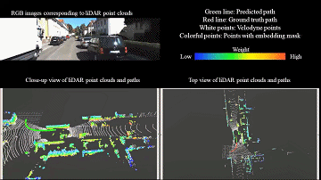
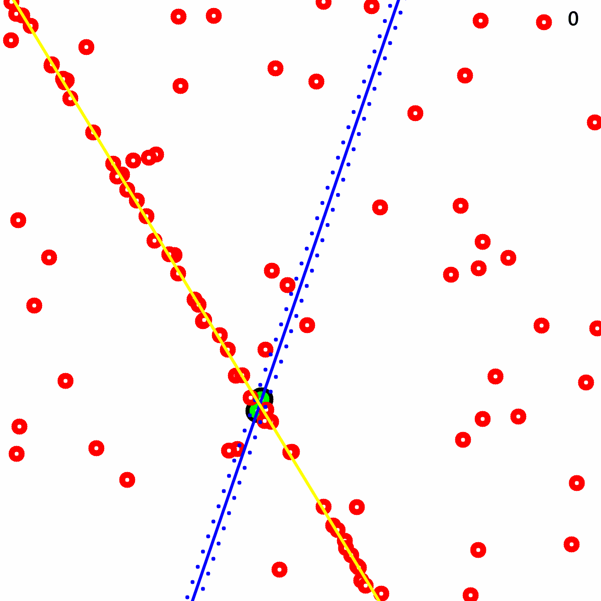

Research
Physical intelligence from perception to action.
From robot vision and world models to physically grounded action.
Overview
Perception. Prediction. Action.
3D/4D Robot Vision
Geometry · Mapping · Motion
World-Model-Based Prediction
Scene flow · Dynamics · World models
Physics-Based Robot Action
Manipulation · VLA · Robot control
Embodied Intelligence
Featured projects.
Selected Work
Representative work.

2D-3D localization
End-to-end 2D-3D Registration between Image and LiDAR Point Cloud
Image–LiDAR registration for vehicle localization.


3D scene flow
3DSFLabelling and DifFlow3D
3D scene flow with auto-labelling and diffusion.


LiDAR odometry
PWCLO-Net and EfficientLO-Net
Learning-based LiDAR odometry.
